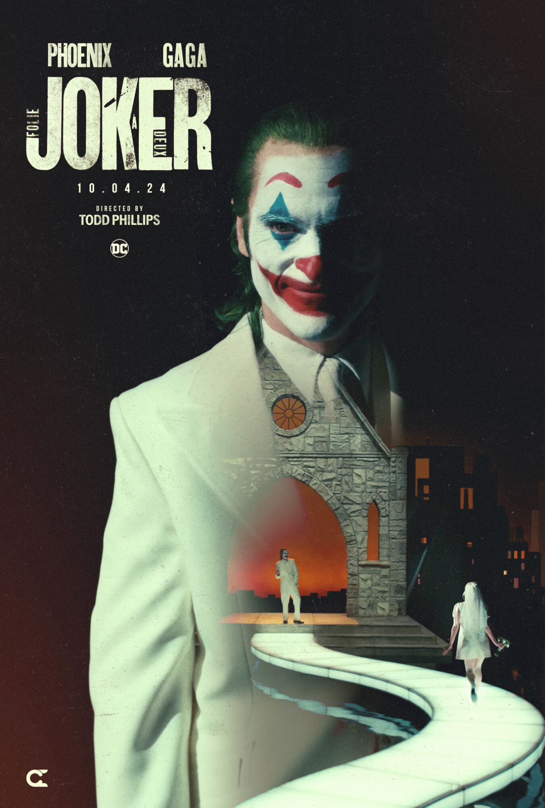
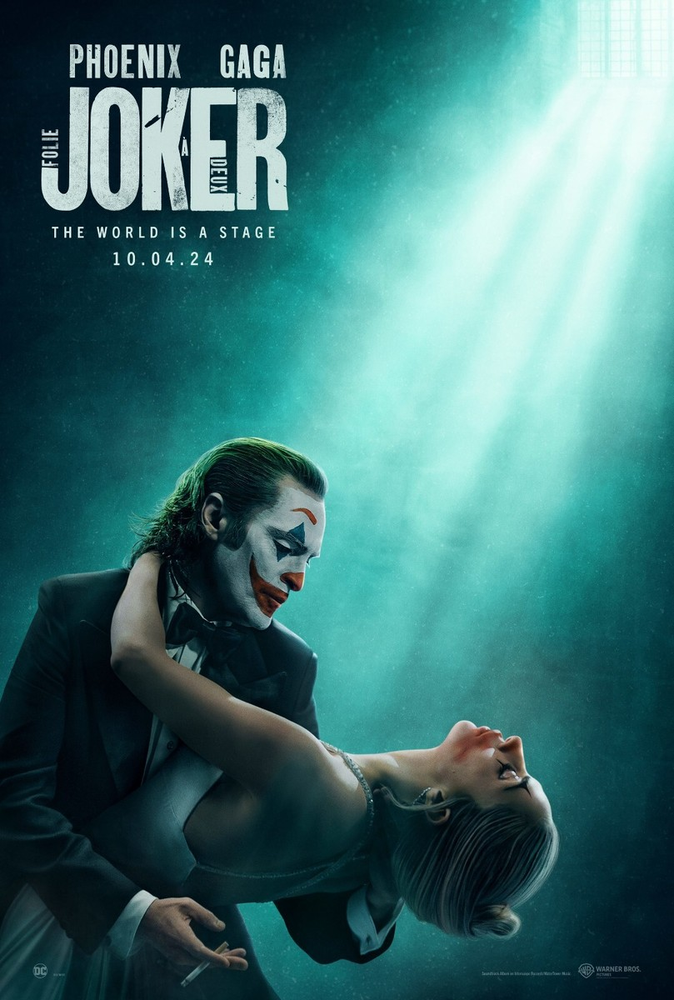
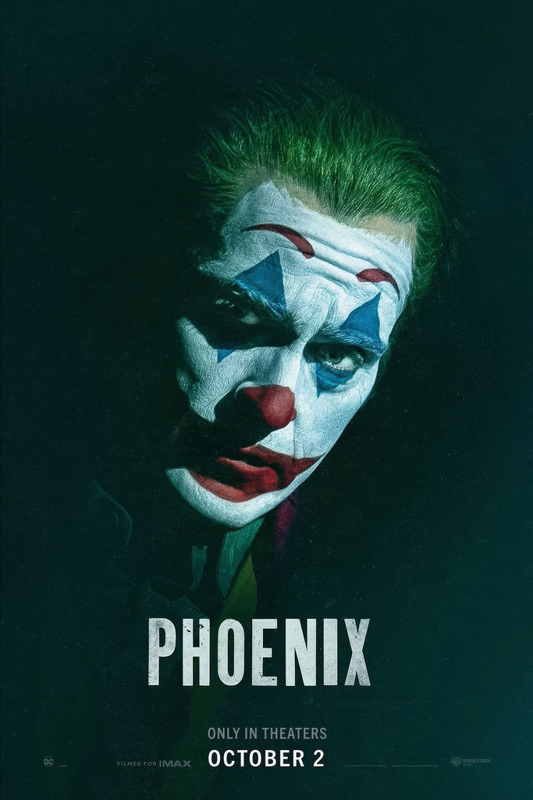
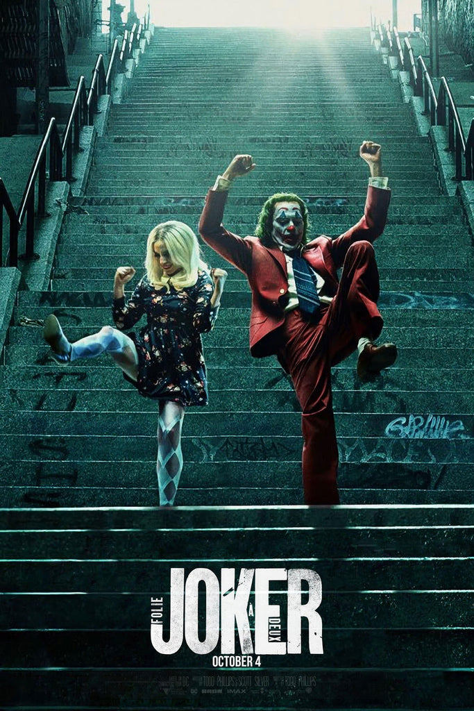
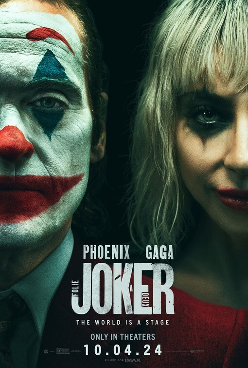

It made me long for the Joker from my childhood. At least he was fun and had sneezing powder.
Deborah Ross, The Spectator

Poster 1

Poster 2
Poster 3

Poster 4

Poster 5

Poster 6
It made me long for the Joker from my childhood. At least he was fun and had sneezing powder.
Deborah Ross, The Spectator
Folie à Deux is a far less morally quarrelsome film, which makes it both less interesting and a sight more enjoyable – if you like the songs.
Jessica Kiang, Sight & Sound
Dramatically inert, devoting 138 very deliberate minutes to revealing what was undeniable from the first film.”
Adam Kempenaar, Filmspotting
The jokes may still fall flat, but that doesn’t mean the punchline does not land.
Sara Michelle Fetters, MovieFreak.com
Set on tediously considering its predecessor, Joker: Folie à Deux offers nothing to the franchise.
John Wilmes, Chicago Reader
It is a very strange film... and I mean that as a compliment.
Mark Kermode, Kermode and Mayo's Take (YouTube)